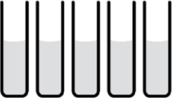

Carbohydrates consist of simple sugars and more complex chains of sugars called polysaccharides. Examples of sugars are glucose, sucrose, maltose, etc. Polysaccharides include storage carbohydrates such as plant and animal starches, and structural carbohydrates like cellulose (plant fiber) and chitin (insect skeletons).
Test for Sugars:
One means of testing for sugars is the Benedicts Reagent test. The Benedict's Reagent changes color after heating in the presence of reducing sugars.
Test for Starches:
Iodine (Lugol's) can be used to determine the presence or absence of starches. A color change from yellow or brown to a blue-black color indicates that starch is present.
Choose your test
|  | ||||
| Water | Glucose | Onion Juice |
Potato Juice |
Diet Sprite |
| Water | Glucose | Onion Juice |
Potato Juice |
Diet Sprite |
Proteins are chains of amino acids (twenty different amino acids occur in living things), which function structurally (e.g. cell membrane) or enzymatically (an enzyme is a chemical that "makes" something happen).
Test for Proteins:
We will be using Biuret Reagent to test for the presence of proteins. When using the Biuret Reagent, a change from blue to violet means proteins are present.
| Water | Egg White |
Chicken Soup |
Diet Sprite |
Lipids include such subcategories as fats and steroids. Some fats are solid at room temperature (e.g. lard), others are liquid (e.g. corn oil). One of the better known steroids is cholesterol.
Test for Lipids:
Another indicator - Sudan III - will be used in this test. As fat content increases, the intensity of the dye (Sudan III) also increases - a vivid orange color should appear.
 |
Testing Chemical Composition of Everyday Foods:
There are several everyday foods represented at the right. Using the lab tests for carbohydrates, proteins, and lipids, determine which of the organic compounds are present in the food samples.